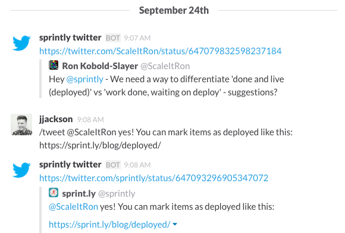
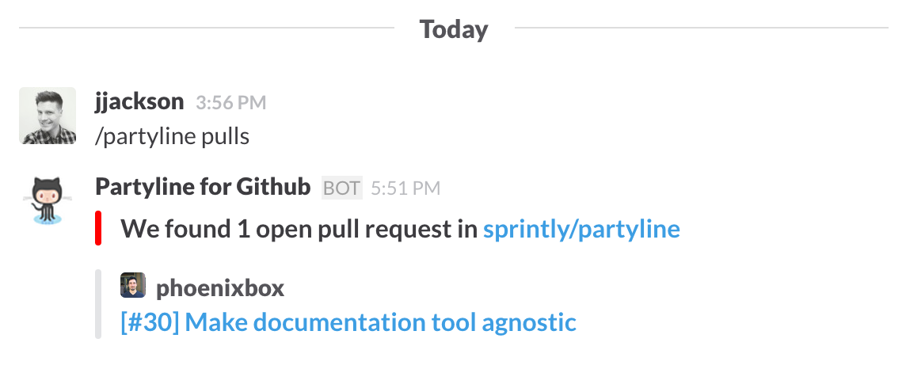

The future of UI is text
Software developers, sysadmins and power users use the command-line as a simple and efficient way to get work done. Entering in text commands is faster than using a mouse.
Graphical User Interfaces (those that require a mouse) have limitations. Despite attempts to standardize interfaces, all GUI applications use different menus, shortcuts, and processes for getting stuff done. Also, most GUI software is sandboxed: you can't control one application from within another.
Command lines lost the interface wars. Most people use a mouse and interact with graphical elements on the screen. However, a popular messaging app may have rekindled the usage of the command-line interface (CLI) amongst non-power users.
Enter Slack
Slack is a chat app for teams. It's used by over 500,000 people on a daily basis. Most of these people have never used a command line before, but Slack has surreptitiously introduced many of them to text commands.
One of the first commands people learn is /giphy. This allows people to query Giphy's database for a random GIF that matches a certain keyword. For example, /giphy dancing might return:

Not only does this introduce everyday users to the concept of text commands, it also shows the power of querying outside services from a single interface.
Another popular command is /remind. You can use it to set a personal reminder, such as /remind me to pick up the kids at 2:30pm.
Interacting with the stream
For most people, Slack is open all day on their desktop. They're interacting with it constantly. In terms of usage, it may be their most used application, and almost all of the interaction is done by typing.
Slack isn't just a chat application, but it's increasingly becoming a notification engine. Did a customer just report a bug on Twitter? The notification appears in Slack.
But Slack isn't just a place for notifications to appear. Using the power of integrations and text commands, we can respond with action without having to leave Slack.
For example, in this case I could use an integration like this to respond immediately.

Other use cases
How else could Slack be used as a command line?
The most natural is for project management. Teams are receiving bug reports, discussing new features, and being alerted about deadlines in Slack. Why can't you create, edit, and search project tickets?
The Partyline integration allows you to do this. You connect it to GitHub Issues or Sprintly, and use the /partyline command to manage projects from within Slack.
For example, /partyline pulls will show you open Pull Requests:

And /partyline create Signup endpoint is 500'ing label:bug will create a bug ticket.
The future is one simple interface
In the past, we thought the future of computing would look complicated: lots of buttons, multiple screens, and crazy interfaces.
I believe the future looks more like this:
Interested? Try Partyline with your team and let us know what you think!
If you're interested in a technical overview of how we built Partyline, check out: How to build your own Slack integration